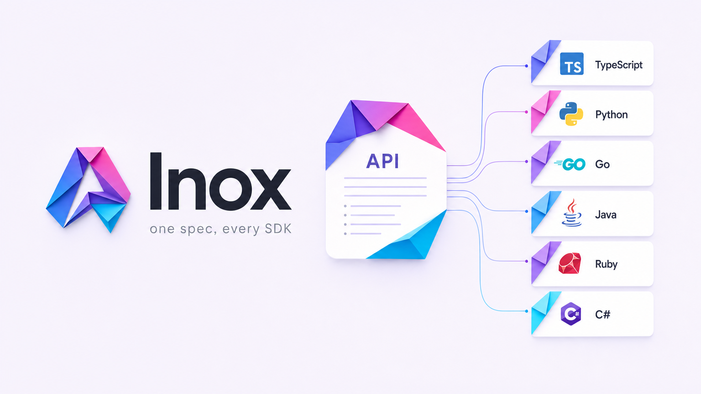

Point Inox at your OpenAPI spec. Get idiomatic SDKs in six languages, an MCP server, and a CLI — self-hosted, zero runtime dependencies, verified on every build.

Proof
No per-endpoint config. Inox auto-derives resources, methods, every schema, pagination, and auth straight from the spec.
# point it at OpenAI's real spec inox generate -c openai.sdkgen.yml --target typescript --out out cd out/typescript && npx tsc --noEmit # 3,160 files, 0 errors
Tested on 12 public specs — minimal config each, then tsc --noEmit.
11 of 12 compile with zero errors.
| API | Operations | TS files | tsc errors |
|---|---|---|---|
| Stripe | 587 | 11,356 | 0 |
| OpenAI | 242 | 3,160 | 0 |
| DigitalOcean | 632 | 55 | 0 |
| Plaid | 330 | 2,323 | 0 |
| Box | 296 | 1,534 | 0 |
| Asana · Discord · Twilio · Adyen · Ory · SendGrid | +6 | — | 0 |
Agent-native
One zero-dependency MCP server per API (protocol 2025-06-18). It adapts to API size so big specs don't blow past client tool limits.
inox products -c openai.sdkgen.yml --out out node out/mcp/dist/server.js --tools typed --scope read # 100 read-only tools
One strongly-typed tool per endpoint, schemas from the spec.
Three meta-tools to discover & invoke endpoints — for large APIs.
Constrained HTTP execute + search_docs, for code-writing agents.
Landscape
| Inox | Stainless | Speakeasy | Fern | OpenAPI Gen | |
|---|---|---|---|---|---|
| Self-hosted / air-gapped | ✓ | ✗ wound down | partial | partial | ✓ |
| Zero-dependency runtime | ✓ | ✓ | 1 dep | deps | ✗ |
| Runtime conformance (6 langs) | ✓ | — | — | — | ✗ |
| SBOM + SLSA provenance | ✓ | partial | — | — | ✗ |
| MCP server from spec | ✓ | ✓ | — | — | ✗ |
| Price | free / OSS | acquired | $$ | $250/mo | free |
Get started
npm install && npm run build && npm link # installs the `inox` CLI inox init --force inox generate --out sdk inox verify --out sdk # PASS × 6 languages
MIT licensed. Runs fully offline. Your spec never leaves your machine.